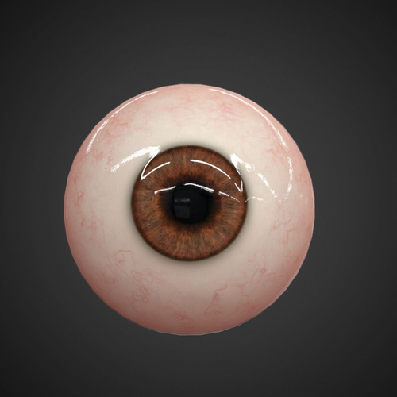

My name is Jamie Lubell and I am an Engineer at the University of Oslo and collobrate with the Knight Lab at UC Berkeley.. 
My interest is predominately on intracranial EEG, EEG, and eye tracking.
PupilPlot is copywrited under a creative commons license, is opensource, and most likely full bugs.
Please check the References page for the true smarties and if you have any questions, comments, or suggestions: